<div id="content" class="wiki">
<div class="wikipage searchable">

<h1 id="AlarmTreeandAlarmTable">Alarm Tree and Alarm Table<a title="Link to this section" href="#AlarmTreeandAlarmTable" class="anchor"></a></h1>
<p><strong>Purpose: Watching alarms from an EPICS-based control system</strong></p>
<p><strong>Prerequisites:</strong> This is not an introduction to EPICS but to the alarm-related views of the Control System Studio, therefore some experience with EPICS-based systems is
necessary.<br>
</p>
<p></p>
<h4>A brief introduction for using the Alarm Tree View and the Alarm Table View follows</h4>
<ol>
	<li><a href="#RightafterthestartofCSS">Right after the start of CSS</a></li>
	<li><a href="#SettingupaSoft-IOC">Setting up a Soft-IOC</a></li>
	<li><a href="#ConfiguringaccesstoyourEPICS-basedsystem">Configuring access to your EPICS-based system</a></li>
	<li><a href="#Watchingalarmswiththealarmtree">Watching alarms with the alarm tree</a></li>
	<li><a href="#Savingthefacilitymodel">Saving the facility model</a></li>
	<li><a href="#Watchingalarmswiththealarmtable">Watching alarms with the alarm table</a></li>
</ol>

<h2 id="RightafterthestartofCSS">Right after the start of CSS<a title="Link to this section" href="#RightafterthestartofCSS" class="anchor"></a></h2>
<p>After closing the welcome page you will see the default perspective:</p>
<p><a style="padding: 0pt; border: medium none;" href="./image/01_CSS_Default_Perspective.png">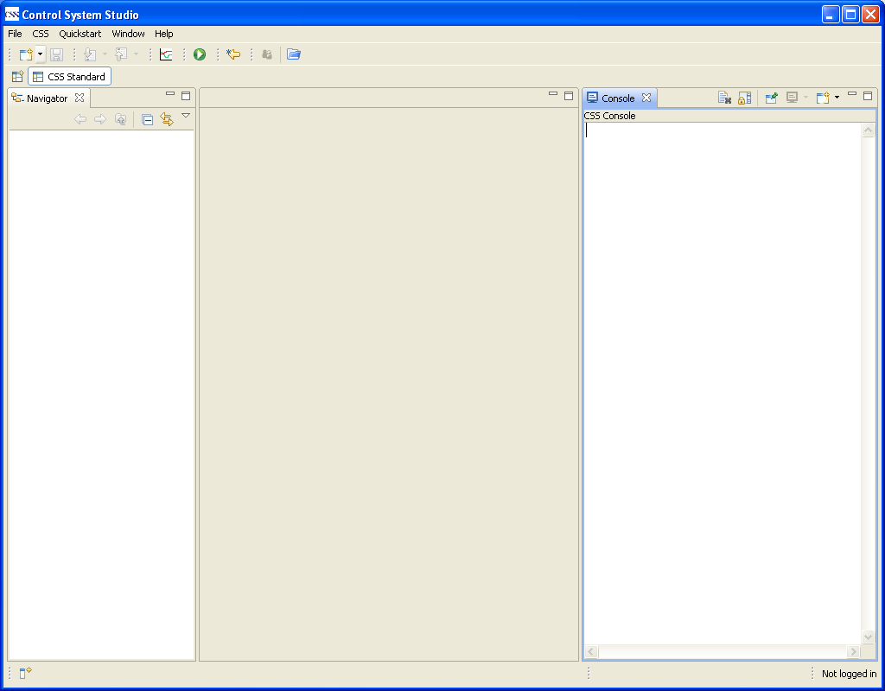</a><br>
</p>
<p>At first let us take a look at some process variable. Open the Probe View from the menu:</p>
<p><a style="padding: 0pt; border: medium none;" href="./image/02_Start_Probe.png">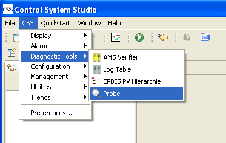</a><br>
</p>
<p>and enter the name of a process variable which must be reachable within your subnet. Then rearrange the display, so it will look tidy:</p>
<p><a style="padding: 0pt; border: medium none;" href="./image/03_Probe_Tidy.png">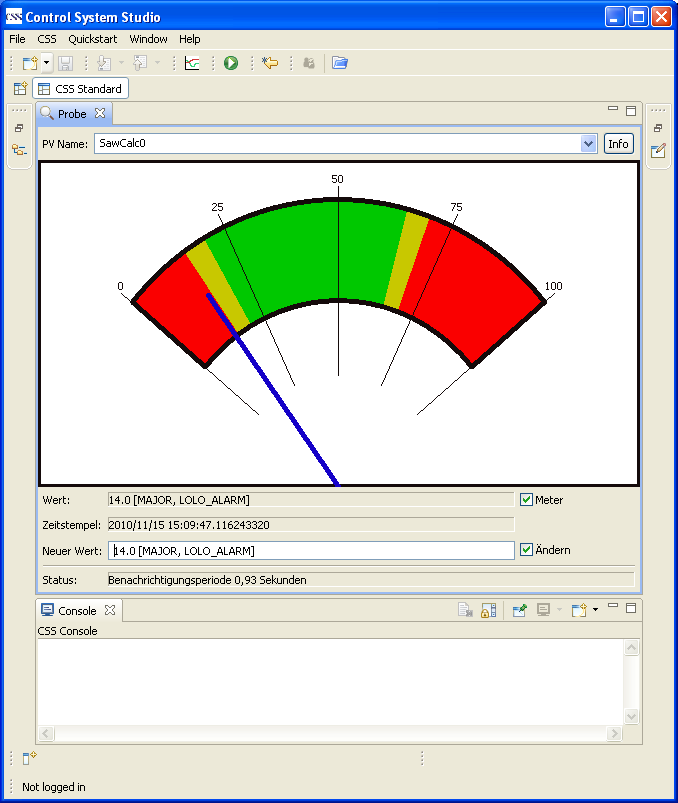</a><br>
</p>
<p>To make Island appear tidy, I minimzed the navigator view and the editor area. I also dragged the console view to the bottom of the probe view and changed the size of the whole css window to a
reasonable size.</p>
<p>How do you proceed if this does not work?</p>
<ul>
	<li>If you do not know how to resize and reorder views, you find help in the help menu, see <tt>Help&gt;Help Contents&gt;CSS Core&gt;User Interface</tt></li>
	<li>If you have no EPICS-based control system at hand you may want to use a test system (so called soft-ioc). Read the section <i>Setting up a Soft-IOC</i> to get you started.</li>
	<li>If you want to have access to process variables from your facilities, we expect them not to be in your subnet. Thus they will not be reachable without a small amount of configuration. Read
	the section <i>Configuring access to your EPICS-based system</i>.</li>
</ul>
<h2 id="SettingupaSoft-IOC">Setting up a Soft-IOC<a title="Link to this section" href="#SettingupaSoft-IOC" class="anchor"></a></h2>
<p><strong>The Soft-IOC is only available on the windows platform.</strong></p>
<p>Well, do get this working without hassle we put a very simple Soft-IOC into a samples bundle of this application.</p>
<ol>
	<li>Open a command window</li>
	<li>Go to the directory where you installed Island</li>
	<li>Follow the path <tt>Island\plugins\org.csstudio.samples\SimpleSoftIOC</tt></li>
	<li>In this directory is a batch file <tt>RunSoftIOC.bat</tt> which starts the Soft-IOC</li>
</ol>
<p>It only provides two pvs, with the names SawCalc0 and SawCalc1.</p>
<h2 id="ConfiguringaccesstoyourEPICS-basedsystem">Configuring access to your EPICS-based system<a title="Link to this section" href="#ConfiguringaccesstoyourEPICS-basedsystem" class="anchor">
</a></h2>
<p>We do this by entering configuration data in the preferences, so open them up:</p>
<p><a style="padding: 0pt; border: medium none;" href="./image/04_Start_Prefs.png">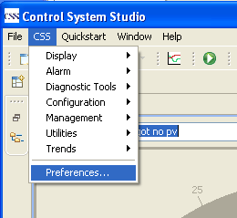</a><br>
</p>
<p>Select the preference page for EPICS in the section 'CSS Core'.</p>
<p><a style="padding: 0pt; border: medium none;" href="./image/05_Pref_Page_EPICS.png">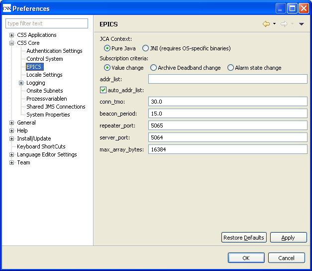</a><br>
</p>
<p>Now enter the channel address list for your system in the form '192.168.47.11' into the field 'addr_List'. You may enter more than one address, separated by blanks.</p>
<p>Now you should have access to your system and see the value of the pv updating.</p>
<h2 id="Watchingalarmswiththealarmtree">Watching alarms with the alarm tree<a title="Link to this section" href="#Watchingalarmswiththealarmtree" class="anchor"></a></h2>
<p>For the next sections it is desirable to find a pv which will change alarm state quite often, so we have something to watch for. If you are using the soft-ioc, the pvs SawCalc0 und SawCalc1 are
good candidates for this.</p>
<p>At first we are going to open the alarm tree view. The purpose of the alarm tree is to be able to define aggregates of process variables which belong together in a certain way. These aggregates
are modeled by so-called component nodes in the alarm tree, reflecting the most important alarm state of the pvs in the aggregate. There are two main reasons for this:</p>
<ol>
	<li>The operator wants to have a single point of inspection for a subsystem. He or she then collects the interesting pvs in a component node. Keep in mind that the notion of a subsystem may be
	varying between operators (one cares for the cooling, another one for the power supply).</li>
	<li>Certain pvs will give alarms even if the facility is well working. The operator may not be interested in each individual alarm, but for the current state of the facility only a subset of the
	pvs provide meaningful information. (As an example you might think of a starting engine whose rpm are below the alarm limit while starting. Actually, we know that. So for the time the engine is
	started, we just ignore the rpm control, i.e. we don't put it in the component node for the 'start control'.)</li>
</ol>
<p>What we actually do is building a model of the facility according to certain terms. The result may of course be stored. The island version uses a simple XML file as a store, a somewhat larger
system may use ldap for this.</p>
<p>When the Alarm Tree View starts, the default store simply shows an node called 'Example' and a prompt to enter a pv. The prompt is simply a leaf node modeling a process variable - also called a
record - with a funny name (you won't have a pv called 'add your pv here', haven't you?). Lets try it, start the alarm tree:</p>
<p><a style="padding: 0pt; border: medium none;" href="./image/06_Start_Alarm_Tree.png">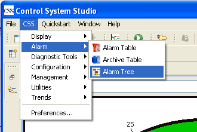</a><br>
</p>
<p>and rearrange the display:</p>
<p><a style="padding: 0pt; border: medium none;" href="./image/07_Tree_Probe_Tidy.png">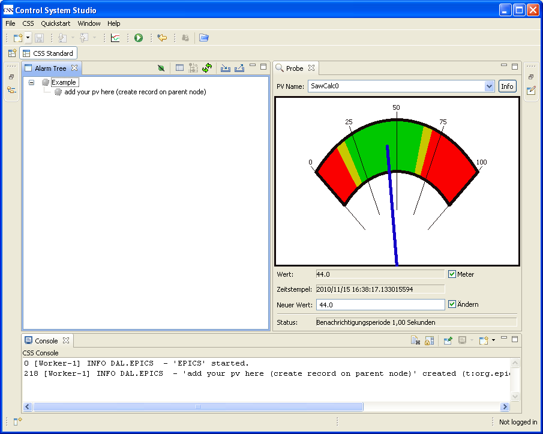</a><br>
</p>
<p>Now you can create a record by entering the pv name in the dialog box</p>
<p><a style="padding: 0pt; border: medium none;" href="./image/08_Tree_Create_Record.png">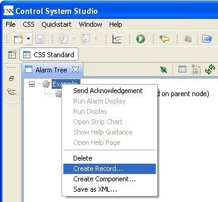</a><br>
</p>
<p>and delete the funny prompt. You will see the tracking of the alarm states of your pv. Please create another record entry and watch the state of the Example node reflecting the most important
alarm state of its children.</p>
<p><a style="padding: 0pt; border: medium none;" href="./image/09_Explain_Component_Node.png"></a><br>
</p>
<p>But what do you actually see?</p>
<ol>
	<li>SawCalc0 has currently no alarm (green dot)</li>
	<li>SawCalc0 had a major alarm right before (red shadow)</li>
	<li>SawCalc1 has currently a minor alarm (yellow dot)</li>
	<li>SawCalc1 also had a major alarm right before</li>
	<li>The component node shows the most important of its childrens alarms.</li>
</ol>
<h2 id="Savingthefacilitymodel">Saving the facility model<a title="Link to this section" href="#Savingthefacilitymodel" class="anchor"></a></h2>
<p>Now you have crafted a valuable model of your system, so you want to store it. The non-LDAP solution is somewhat simple here. Probably you already noticed the Import / Export XML buttons in the
toolbar of the Alarm Tree View. You may export any number of XML files and may reimport them as needed. Take care that any XML file contents, which shall be reimported side-by-side, starts at
different root nodes. You cannot import an XML file with a root node that is already present in the Alarm Tree View.</p>
<p>However, this is the usual way to work with XML files:</p>
<ol>
	<li>Define your model with component nodes and records as leaf nodes.</li>
	<li>Export the data into an XML file.</li>
	<li>Set the path to your XML file in the preferences. This way your file serves as the store at startup and while reloading (there is another button for that in the toolbar).</li>
	<li>Now you can work on the same set of pvs with another display, the alarm table. This is explained in the next section.</li>
</ol>
<p>Here you define the path to the default model for the Alarm Tree View.</p>
<p><a style="padding: 0pt; border: medium none;" href="./image/10_XML_Prefs.png">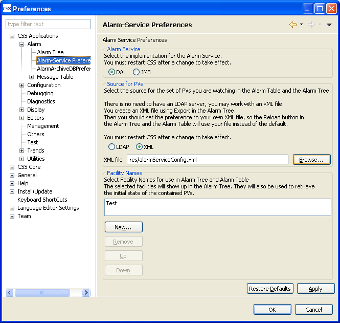</a><br>
</p>
<p>Simply browse to your exported XML file. Notice that you must restart css after changing the preferences for the 'Source of PVs'.</p>
<h2 id="Watchingalarmswiththealarmtable">Watching alarms with the alarm table<a title="Link to this section" href="#Watchingalarmswiththealarmtable" class="anchor"></a></h2>
<p>The XML file for the alarm tree configuration is also used by the alarm table to find out which pvs it should watch. Start the Alarm Table View</p>
<p><a style="padding: 0pt; border: medium none;" href="./image/11_Start_Alarm_Table.png">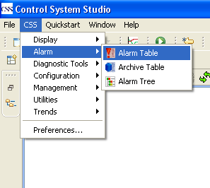</a><br>
</p>
<p>and watch the alarms for the set of pvs you defined in the XML file coming in. If you have not yet defined your own facility model, please do so as described in the previous section. Eventually
the alarms will show up. If a major alarm occurs, you will hear a beep. Switch off sound with the toggle button, if it annoys you. It will, but this is a matter of the large number of alarms and the
kind of beep. It is possible to select a more pleasing sound in the preferences.</p>
<p><a style="padding: 0pt; border: medium none;" href="./image/12_Tree_Table.png">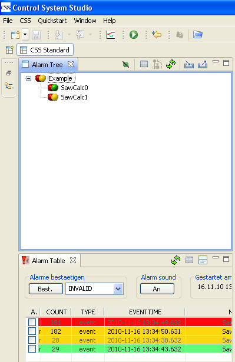</a><br>
</p>
<p>Now this is pretty colorful, but what does it mean? We are looking at the Alarm Table View:</p>
<ol>
	<li>The topmost line is red, meaning that from pv SawCalc1 a major alarm was reported. But the font of its text is gray, so we know it is outdated.</li>
	<li>The 2nd line tells us, that pv SawCalc1 reported a minor alarm. It is written in black, so it is currently valid.</li>
	<li>The 3rd line tells us about another outdated minor alarm, this time from pv SawCalc0.</li>
	<li>The 4th line makes sure we notice that the minor alarm of SawCalc0 already went away, there is currently no alarm state.</li>
</ol>
<p>If you don't want to be informed about outdated alarms, you may remove the checkmark for 'Outdated alarms' in the preference page for the alarm table. This way we would only have had two lines
with the valid alarms / resp. removal of former alarm states.</p>
<p>The data shown in the alarm table is collected right from the start of Island, it doesn't matter whether the Alarm Table View has been opened or not. This way you get all information possible,
but you have to restart Island if you make changes to the preferences for the XML file. However, if you only modified the contents of the XML file with the Alarm Tree View and exported it, you are
able to reload your changes using the Reload-Button in the Alarm Table View. Of course, the alarm table is only interested in the pvs you want to watch, not in the components you defined. These are
only meaningful in the alarm tree.</p>
<p>There is another view, the Log View, which simply records the alarm messages as they come in. The topmost message is the newest, the colors are the same as in the Alarm Table View. However, no
sound is provided here.</p>
<p>Now we are done with the introduction. You can close Island, if you later reopen it, you will find your views properly ordered as before.</p>

</div>
</div>